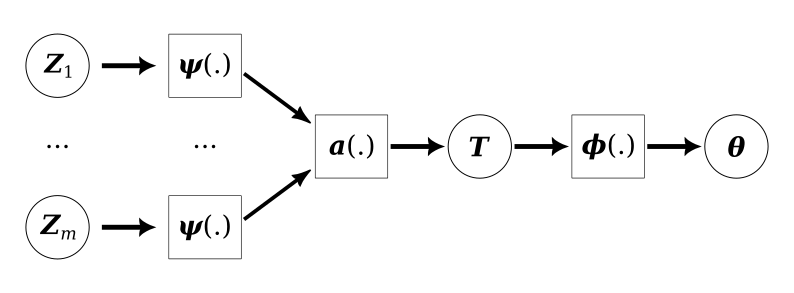

Neural Bayes estimators
In this example we will use the neural Bayes estimators developed by Sainsbury-Dale et al (2023) for the very simple task of generating a point estimate of the parameters of a linear regression. Training the model was a bit harder than in previous MNIST examples, but with a bit of trial-and-error I was able to get something reasonable that trained in under 5 minutes. The overall architecture used in the paper is shown in Figure 1.

A statistical model
The statistical model we are interested in estimating the parameters of is linear regression:
\[ y_i\sim\text{Normal}(\beta x_i, \sigma^{2}) \]
for \(i=1,\ldots,m\) where we assume \(\sigma^{2} = 0.5\) is fixed and known to keep things simple. There are only two covariates so \(x_i = (1, x_i^1, x_i^2)\) (we assume an unknown intercept). The prior distribution on the elements of \(\beta\) is a standard normal distribution.
I want to stick to the work in the paper, so I won't attempt any uncertainty quantification in this example. They suggest that you could use the bootstrap since parameter estimation is so cheap.
Loading packages
Load packages and set the seed used by PyTorch. Since there is extensive functionality for random number generation in PyTorch, we will use that to simulate our datasets.
import time import torch import torch.nn as nn import torch.optim as optim from torch.distributions import uniform, normal import pandas as pd import plotnine as p9 from plotnine import * torch.manual_seed(0)
Define the input and output filenames
training_data_csv = "data/linear-regression-2024-01-11-training.csv" testing_data_csv = "data/linear-regression-2024-01-11-testing.csv" loss_csv = "example-2024-01-11-loss.csv" loss_png = "example-2024-01-11-loss.png" beta_png = lambda n: f"example-2024-01-11-beta{n}.png"
Define statistical model constants
Since each datum for this model is itself a dataset, we need to define
the size of those datasets. This corresponds to the parameter \(J\) in
the paper. In the paper they suggest a way to allow \(m\) to vary but do
not appear to test it, here it is fixed to dataset_size.
y_var = torch.tensor([0.5]) dataset_size = 500 std_normal = normal.Normal(torch.tensor([0.0]), torch.tensor([1.0])) uniform_x_range = uniform.Uniform( torch.tensor([-5.0]), torch.tensor([5.0]) )
Define simulation constants
The value of train_reps is the number of datasets that we will
generate, this corresponds loosely to the parameter \(K\) in the paper.
The test_reps is there to define how big the test set is.
train_reps = 1000 train_batch_size = 100 train_num_epochs = 10000 test_reps = 100
Simulate training data
Simulating the training data is a little bit fiddly, but the only notable thing is the use of the bmm function to do the batch matrix-matrix product. Since we need to generate both a training and a testing dataset, it makes sense to write a function to do this.
def random_regression_datasets( num_replicates: int, replicate_size: int, model_dimension: int): beta_vals = std_normal.sample( sample_shape=torch.Size([num_replicates, model_dimension]) ) x_vals = ( uniform_x_range .sample( sample_shape=torch.Size( [num_replicates, replicate_size, model_dimension-1] )) .squeeze(3) ) x_vals_full = torch.cat( (torch.ones(num_replicates, replicate_size, 1), x_vals), dim = 2) y_mean = torch.bmm(x_vals_full, beta_vals) y_vals = ( normal .Normal(y_mean, y_var) .sample(sample_shape=torch.Size([1])) .squeeze(0) ) data_vals = torch.cat((y_vals, x_vals), dim=2) return data_vals, beta_vals
train_data, train_beta = random_regression_datasets( train_reps, dataset_size, 3) assert train_data.shape == torch.Size([train_reps, dataset_size, 3])
Save the training data to CSV
train_data_df = [] for ix in range(train_data.shape[0]): for jx in range(train_data.shape[1]): train_data_df.append( [ix, jx] + train_data[ix][jx].tolist() + train_beta[ix].squeeze(1).tolist() ) train_data_df = pd.DataFrame( train_data_df, columns=['replicate', 'element', 'y', 'x1', 'x2', 'beta0', 'beta1', 'beta2'] ) train_data_df.to_csv(training_data_csv)
Define the model architecture
There are three components to this module: the \(\psi\) network which summarises a single datum, the \(a\) aggregator which combines these summaries, and the \(\phi\) network which generates the final estimates of the parameters.
class LinearRegressionNB(nn.Module): def __init__(self, m): super(LinearRegressionNB, self).__init__() self._m = m # individual dataset size: {z_1,...,z_m} self._n = 3 # input dimension: (y_i, x_i^1, x_i^2) self._q = 10 # latent dimension self._p = 3 # output dimension: (beta_0, beta_1, beta_2) self._psi = nn.Sequential( nn.Linear(self._n, self._q), nn.Sigmoid(), ) self._aggregator = torch.mean self._phi = nn.Sequential( nn.Linear(self._q, self._q), nn.Sigmoid(), nn.Linear(self._q, self._p) ) def forward(self, x): # assert x.dim() == 3 # assert x.shape[1] == self._m # assert x.shape[2] == self._n outputs = [] for ix in range(x.shape[0]): x_ix = self._psi(x[ix]) x_ix = self._aggregator(x_ix, dim=0) x_ix = self._phi(x_ix) outputs.append(x_ix) x = torch.stack(outputs, dim=0) x = x.unsqueeze(2) return x
The for-loop is used in the forward method because that is the cleanest way I could find to broadcast this model over a batch of datasets. Since the batch size will probably never get to big this doesn't seem like a terrible choice, but would be worth keeping in mind.
There are some assertions in the forward method that are commented out so that the code runs as fast as possible during training. They are useful as a way to check everything is set up correctly so I will leave them there.
Instantiate the network and check it works as expected
As mentioned above, this network will only work for datasets of a fixed size, so we need to specify this at run time when the network is initialised.
lm_nb = LinearRegressionNB(dataset_size) assert lm_nb(train_data).shape == torch.Size([train_reps, 3, 1]) assert lm_nb(train_data).shape == train_beta.shape
Train the network
Since this is a regression problem we will use the MSE loss function. We manage the batching of the data manually. Since it is simulated, it would be possible to generate it on the fly from a data loader.
loss_fn = nn.MSELoss() optimizer = optim.Adam(lm_nb.parameters(), lr=1e-3) lm_nb.train() loss_history = [] training_start_time = time.time() for epoch in range(train_num_epochs): # Generate a random sample of 100 indicies to use as a batch batch_idx = torch.randint(0, train_reps, (train_batch_size,)) batch = train_data[batch_idx] batch_beta = train_beta[batch_idx] # Forward pass batch_ests = lm_nb(batch) loss = loss_fn(batch_ests, batch_beta) epoch_loss = loss.item() # Backward pass optimizer.zero_grad() loss.backward() optimizer.step() if epoch % 100 == 0: print(f"Epoch {epoch} loss: {epoch_loss}") loss_history.append((epoch,epoch_loss)) lm_nb.eval() training_finish_time = time.time() print(f"Training took: {training_finish_time - training_start_time}")
Visualise the training process
loss_df = pd.DataFrame(loss_history, columns=['epoch', 'loss']) loss_df.to_csv(loss_csv) (ggplot(loss_df, aes(x='epoch', y='loss')) + geom_line() + theme_bw() ).save(loss_png, height = 2.9, width = 4.1)
Simulate testing data
We can reuse the function from above to simulate a dataset to test the model with.
test_data, test_beta = random_regression_datasets( test_reps, dataset_size, 3) assert test_data.shape == torch.Size([test_reps, dataset_size, 3])
Save the testing data to CSV
test_data_df = [] for ix in range(test_data.shape[0]): for jx in range(test_data.shape[1]): test_data_df.append( [ix, jx] + test_data[ix][jx].tolist() + test_beta[ix].squeeze(1).tolist() ) test_data_df = pd.DataFrame( test_data_df, columns=['replicate', 'element', 'y', 'x1', 'x2', 'beta0', 'beta1', 'beta2'] ) test_data_df.to_csv(testing_data_csv)
Visualise the test results
The agreement between the true parameters and the estimates is good, but with the value of \(m\) that should be expected. It would be nice to compare this to the MLEs generated by a statistics package in the future.
test_beta_df = pd.DataFrame( test_beta.squeeze(2).numpy(), columns=['true_beta_0', 'true_beta_1', 'true_beta_2']) test_beta_df['dataset'] = test_beta_df.index test_beta_est_df = pd.DataFrame( lm_nb(test_data).squeeze(2).detach().numpy(), columns=['est_beta_0', 'est_beta_1', 'est_beta_2']) test_beta_est_df['dataset'] = test_beta_est_df.index plot_df = pd.merge(test_beta_df, test_beta_est_df, on='dataset') (ggplot(plot_df, aes(x='true_beta_0', y='est_beta_0')) + geom_point() + geom_abline(intercept=0, slope=1) + theme_bw() ).save(beta_png(0), height = 2.9, width = 4.1) (ggplot(plot_df, aes(x='true_beta_1', y='est_beta_1')) + geom_point() + geom_abline(intercept=0, slope=1) + theme_bw() ).save(beta_png(1), height = 2.9, width = 4.1) (ggplot(plot_df, aes(x='true_beta_2', y='est_beta_2')) + geom_point() + geom_abline(intercept=0, slope=1) + theme_bw() ).save(beta_png(2), height = 2.9, width = 4.1)
Discussion
Neural Bayes estimators provide a way to approximate Bayes estimators with neural networks, yieldling flexible approach to likelihood-free inference. However, it is not immediately clear what the best way to quantify the uncertainty is. To an extent, this can be achieved with simultaneous quantile regression as proposed by Tagasovska and Lopez-Paz (2019).